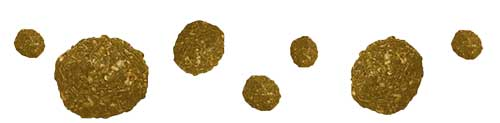

We are Cromble! We work magic with spent grain, which is the resulting product of the brewing process. Spent grain, unlike grain, is actually better for us because it has 20% protein, 70% fibre, and less fats. We use it to make delicious and nutritious granola products, so keep a lookout for our BrewBites!
Sustainable
70% Fibre
20% Protein
For Brewers We...
~ Pick up spent grain reliably, on a regular basis.
~ Can include the brewer's brand on our products.
~ Repurpose grain sustainably so breweries don’t have food waste on their conscience!
85% of a brewer's unused product is spent grain!
For YOU We...
~ Provide a delicious snack.
~ Make you feel good about your health.
~ Make it conveninent to fill your tummy with a (did we mention, delicious) BrewBite!
"Our mission is to rescue 100% of spent grain and use it to its best potential" - the Cromble team